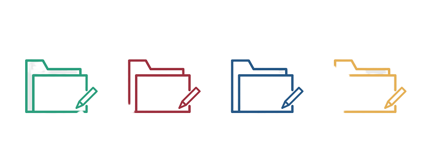
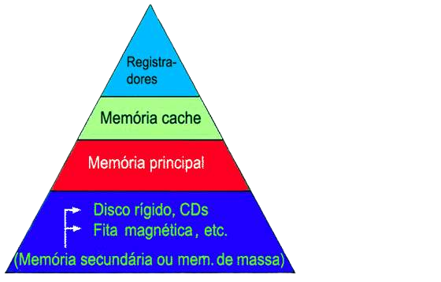
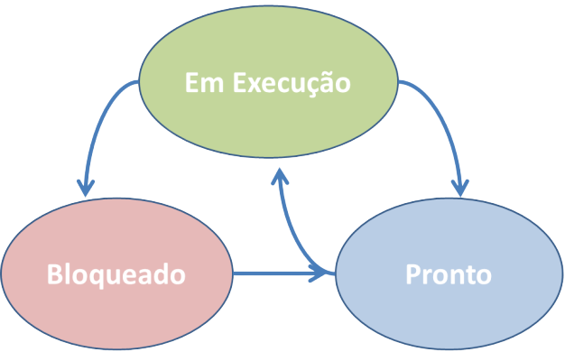

Gerenciamento de Arquivos
A parte do sistema operacional que gerencia os arquivos e as operações
de arquivos é a gerência do sistema de arquivos. A gerência do sistema
de arquivos também cuida da segurança no acesso aos arquivos,
garantindo que um usuário não tenha acesso não autorizado a um arquivo
que pertence a outro usuário.

Gerenciamento de Memória
O Gerente de Memória é um componente do Sistema Operacional (contido
inteira-ou parcialmente no kernel) que aloca memória principal para os
processos, e gerencia a hierarquia de memória (Caches, RAM, e Disco).
O papel do gerenciador de memória é: Manter o endereço para a
informação em uso; Alocar memória para os processos quando eles
precisam; Liberar a memória quando não mais utilizada.
Tipos Básicos: Monoprogramação e Multiprogramação

Gerenciamento de Processos
O conceito de processo é a base para a implementação de um sistema
multiprogramável. O processador é projetado apenas para executar
instruções, não se importando com qual programa esteja em execução ou
qual o seu conteúdo. O sistema operacional por sua vez, é o
responsável por gerenciar qual programa está em execução e é, também,
o responsável por controlar o uso concorrente do processador. A
gerência de processos é uma das principais funções do sistema
operacional. Através dos processos, um programa pode alocar recursos,
compartilhar dados, trocar informações, etc.
